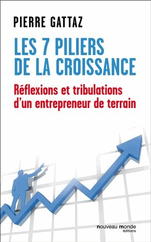
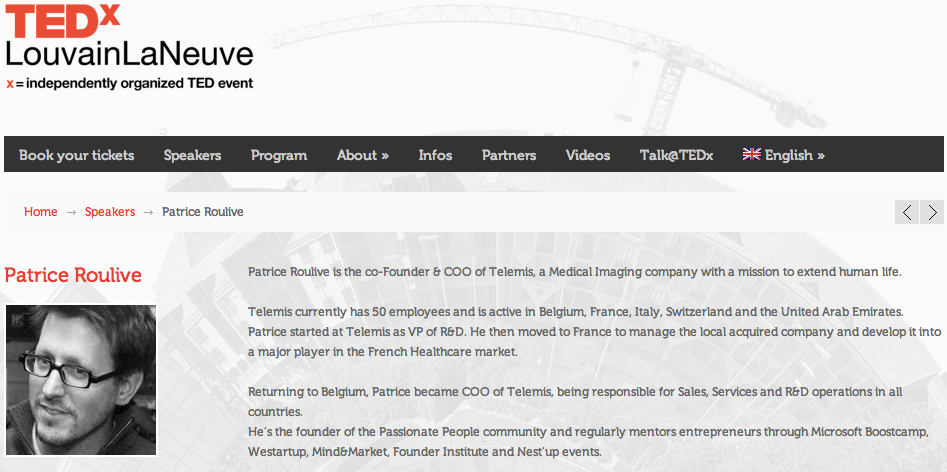
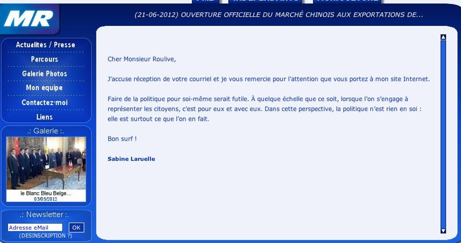
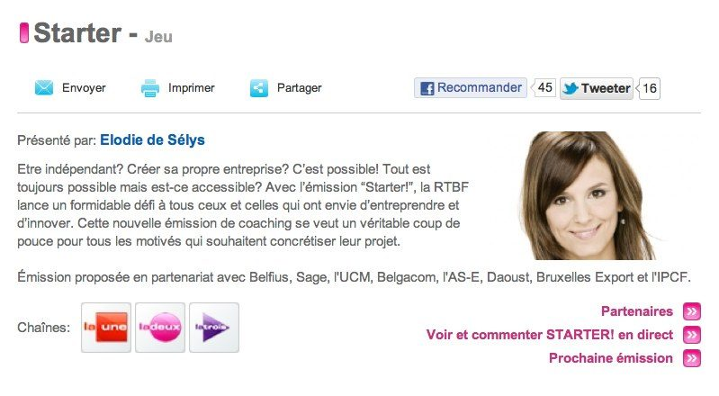

2014
Betagroup #49: quelques réflexions à la con
Hier soir, je suis allé au Betagroup. Bon, disclaimer oblige, je venais pour Sortlist et Pullreview, parce que je les connais. Donc forcément, ~~je vais en dire du bien~~, je ne va…
Read the postCa me saoule #1
Hier soir, je vais voir un débat. Sujet: "Investisseurs / Startups : le grand malentendu ?" Je ne vais pas revenir sur le débat en lui-même, qui, avec pourtant de bonnes personnes,…
Read the post
Telemis a 15 ans ...
1er avril 2014, en sortant des bureaux de Louvain-la-Neuve, je passe devant la peinture des 10 ans de Telemis. Elle a 5 ans. Telemis a 15 ans. Bonne nouvelle, je ne suis pas gâteux…
Read the post2013

Lecture: Les 7 piliers de la croissance de Pierre Gattaz
Un petit post suite à la lecture du livre de Pierre Gattaz "Les 7 piliers de la croissance". D'abord, pour ceux qui ne connaissent pas Pierre Gattaz, extrait de Wikipedia: Il est p…
Read the post
Sketchnote from TEDx Louvain la Neuve
Nice Sketchnote from my talk at TEDx Louvain la Neuve, made by Paule André (Innerfrog) The video should be online soon. In the meantine ... 5 LESSONS Humility Expertise Speed Be di…
Read the post
Débauchage, Concurrent, Tweet et L'Echo
La petite histoire de la semaine Cette semaine, un de nos concurrents, un Goliath, a décidé de lancer une offensive de recrutement. Ils ont donc contacté quasiment toutes les perso…
Read the post
Bref, je vais parler à TEDx (peut-être)
Bref, je vais parler à TEDx Louvain-la-Neuve. Bon, d'abord, faut avouer, moi je trouve que ca pète. Après, quand on y regarde de plus près, j'ai une autre réaction. Il faut savoir …
Read the post2012

La mauvaise idée politique du jour
La fausse bonne idée de la ministre des classes moyennes: diminuer les charges patronales sur le premier emploi créé par une PME. J'ai déjà posté plusieurs fois sur ce blog mon avi…
Read the post14 lessons for health startups from a successful health-tech entrepreneur
Copy of an interview done by Frank Boermeester for HealthStartup Europe. Original is here. 1 Begin with a concrete market need Telemis was founded in 1999 as a spin-off company fro…
Read the post
Mini retour sur Starter (RTBF - La Deux)
Ce soir, j'ai regardé l'émission Starter sur La Deux. Ce que j'ai bien aimé 1. Les idées en général. Plein de domaines différents, peu ou pas de technologie, de Web 2.0 et compagni…
Read the postOn a levé des fonds, et si on pensait à un Business Model ...
Je profite de l'opportunité donnée par cet article sur le bon et reconnu blog Presse Citron pour poser une question. Est-ce que j'ai vraiment l'esprit de travers en analysant l'art…
Read the post2011
Passionate People: Manger mieux pour vivre mieux: les vrais/faux de l’alimentation
La présentation du dernier Passionate People est en ligne ! Vous trouverez toutes les infos sur le concept sur le blog Passionate People. 24 juin 2011, "Manger mieux pour vivre mie…
Read the postPassionate People / Why and How to measure statistics on your website
La présentation du dernier Passionate People est en ligne ! Vous trouverez toutes les infos sur le concept sur le blog Passionate People. 27 mai 2011, « Why and How to measure stat…
Read the postInnovation tips (& self promotion)
Fred Ooms is deeply passionate about creativity, innovation, design thinking and entrepreneurship. Through his Brain Twist blog, he conducts interviews with doers about those topic…
Read the postPassionate People / From an IDEA ... to an APP
La présentation du dernier Passionate People est en ligne ! Vous trouverez toutes les infos sur le concept sur le blog Passionate People. 24 mars 2011, « From an IDEA ... to an APP…
Read the post2010
Passionate People / Entrepreneuriat: retour d’expérience
La présentation du dernier Passionate People est en ligne ! Vous trouverez toutes les infos sur le concept sur le blog Passionate People. 9 septembre 2010, « Entrepreneuriat: retou…
Read the postPriceminister : Toutes les entreprises ont été petites un jour
C'est mon cher ami Pierre qui m'a envoyé un lien il y a quelques semaines, en disant "un lecture sympa pour les vacances?". Et hop. Comme souvent, on a toujours plus de plaisir à l…
Read the postMicrosoft Boostcamp: un projet qu'il est bien
Ces deux dernières semaines, j'ai eu l'opportunité de participer deux jours au second Boostcamp du Microsoft Innovation Center de Mons, Belgique. L'idée de base était de venir part…
Read the postPassionate People / "Innovating in Large Organizations"
La présentation du dernier Passionate People (anciennement Telemis Technology Thursdays) sont en ligne ! Vous trouverez toutes les infos sur le concept sur le blog Passionate Peopl…
Read the postPassionate People / "Global IT Solutions"
Les vidéos du dernier Passionate People (anciennement Telemis Technology Thursdays) sont en ligne ! Vous trouverez toutes les infos sur le concept sur le blog Passionate People. 25…
Read the post2009
What startups are really like (Paul Graham)
Aujourd'hui, je vous invite à lire le récent et excellent article de Paul Graham intitulé What startups are really like. Le net est rempli d'articles et de blogs sur les startups, …
Read the postTelemis Technology Thursdays - Return on Marketing Investment
Les vidéos du dernier Telemis Technology Thursdays sont en ligne ! Le concept est rappelé en bas de ce post. Le sujet était "Return on Marketing Investment" présenté par Vanessa va…
Read the postTelemis Technology Thursdays
Telemis Technology Thursdays? Cela fait quelques mois que Telemis a lancé ce nouveau concept, il est temps de vous en parler et de le promouvoir. L'idée principale derrière les Tel…
Read the post2008
Is there a place for SME?
Next week our company will exhibit for the 9th time at the RSNA in Chicago. RSNA? Radiological Society of North America. The tradeshow is huge: 60,000 medical and science professio…
Read the postMarketing et Notes de frais
Voilà ce que je reçois dans mon courrier hier matin. Je jette un oeil rapidement. 1ère réaction, ce n'est pas pour moi. 2ème réaction, c'est quoi ce bordel. Je prends donc en main …
Read the postFunny Baseball Pitch
youtube=http://www.youtube.com/watch?v=eXRWM-qrOtc&hl=en]
Read the postQuote of the day #42 (Paul Graham, Ycombinator)
Paul Graham, founder of YCombinator, speaks at Startup School 08 about how to create a successful startup
Read the postLettre de candidature et analyse graphologique en 2008
Aujourd'hui je reçois via un collègue un CV avec une lettre de candidature manuscrite. Voilà .. c'est tellement dingue ... c'est la fin de mon post ... :-) Donc, je parle de mon ét…
Read the postExtrait de la revue fiduciaire du 7 mars 2008
Les sénateurs sont payés pour se poser de bonnes questions. Et en plus ils réussissent à emmerder les ministres quand ils ne trouvent pas la réponse eux-mêmes. Moi j'ai la solution…
Read the postEt un prélèvement ... un ...
L’Association pour l’emploi des cadres ( APEC ) est financée par une cotisation à la charge de l’employeur et des salariés: Le forfait APEC est prélevé tous les ans au mois de mars…
Read the postA la radio ce matin ... les plans d'intéressement
Ce matin à la radio (c'était RMC, oui je sais, cela explique peut-être la suite). une petite bafouille sur les plans d'intéressement. C'est un sujet du moment en France, on en parl…
Read the postDes conseils pour de la formation en Gestion de Projet?
Ce soir, je me tourne vers vous pour des conseils. (celui qui arrête de lire ici est un salaud) Je cherche un organisme, une société capable de proposer un excellent service de for…
Read the postJamais trop de papiers ...
J'ai appris aujourd'hui que la société doit demander aux employés qui ont choisi de ne pas prendre la mutuelle proposée par la société, une attestation qu'ils sont bien couverts pa…
Read the postSaul Klein on Entrepreneurship
From Tech IT Easy | View | Upload your own
Read the postFinancement public et les problèmes de téléphone après 17h?
Je me suis fixé de construire un plan de formation pour l'ensemble des personnes de la société. Pour cela, je prends contact avec différents organismes de formation. Je vous demand…
Read the postVive l'admin? Oui ...
La semaine dernière, juste avant de partir en congé, j'ai passé 3 jours à bosser sur une réponse à un Appel d'Offre. Ce n'est pas la première fois, mais comme c'était la semaine de…
Read the post2007
Nicolas, le Président qu'il n'a pas toujours de bonnes idées
Vous vous souvenez certainement (comme vous êtes attentifs) de ce post de mai 2007 "Augmentation du pouvoir d’achat, c’est magique" Là, on est bien dedans. Ca discute ferme, les te…
Read the postLe fax du jour
Dans le fax aujourd'hui (début congés de Toussaint) "Si les vacances scolaires sont synonymes d'arrêts maladie dans votre entreprise, vous êtes peut-être victime d'absentéisme abus…
Read the postQuote of the day #15
"Hope for the best, plan for the worst" Ezra Kramer (Scott Glenn), The Bourne Ultimatum. Si ca vaut pour la NSA, ca doit valoir pour les business plan aussi, non?
Read the postJay Leno's small office
I watched Jay Leno on Inside The Actors Studio this morning. (on French TV, we have Inside The Actors Studio, but with approximately 4 years delay). James Lipton, the host of the s…
Read the postInbox Zero, un début ...
youtube=http://www.youtube.com/watch?v=vd69qNhwGQQ]
Read the postCombien de temps pour suivre les salaires dans une PME?
Le week-end dernier je suis passé au bureau poour gérer les salaires. Vacances du mois d'août pour la personnne qui suit cela habituellement, voilà un tâche que je fais avec plaisi…
Read the postAn office with a view
youtube=http://www.youtube.com/watch?v=WU6akiE4uak]
Read the postLa phrase du jour #11
"Next time you're interviewing for a job, pretend that the power structure is reversed. The hiring manager is trying to figure out if there is any chance you are worthy of the job.…
Read the postToulouse by "nightpool"
Deux entrepreneurs après une longue journée d'entrepreunariat youtube=http://www.youtube.com/watch?v=6QdpZDBGVC0]
Read the postLa qualité de services, le nerf de la guerre #2 (exemples US)
J'espère qu'Antoine ne m'en voudra pas de reprendre le texte de son post sur le service américain. Quelques bons exemples. Le service américain Je croyais que les Japonais étaient …
Read the postQue fait un entrepreneur à 23h le soir?
youtube=http://www.youtube.com/watch?v=LzOpcp7jjqQ]
Read the postSocial Anti Social
Une discussion récente que j'ai eue au bureau. Les gens trouvent que travailler 35h, voir 32h c'est mieux. On vit mieux, plus de loisirs, plus de temps avec les enfants, ... Certai…
Read the postLa qualité de services, le nerf de la guerre #1 (9Telecom)
Allez, je me lance dans une série de posts sur la qualité de services, le nerf de la guerre. Aujourd'hui, on n'a jamais mis autant la qualité de services en avant, et globalement l…
Read the postL'esprit fonctionnaire, c'est un peu ca ...
Je vous parlais l'autre jour de mon questionnement sur le réel intérêt d'un délégué du personnel dans un PME de 15 personnes. Je pense qu'on n'a pas atteint à 15 personnes une tail…
Read the postLe conseil de Seth #1
Si vous ne connaissez pas Seth Godin, c'est une erreur réparable, il suffit de passer sur son site ou de lire ses livres. Entrepreneur, il publie, et donne des conférences sur les …
Read the postMai, le mois du travail
Cette année au mois de mai, comme toutes les autres années, il y a 31 jours. Si on enlève les week-ends, il en reste 23. Si on enlève les jours fériés, il en reste 20. Si on enlève…
Read the postLes employés français sont les plus râleurs au monde
Ce n'est pas moi qui le dit mais Le figaro ou plutôt une étude britannique réalisée récemment. Je dois me sentir concerné parce que j'ai reçu un lien vers l'article 12 fois aujourd…
Read the postAugmentation du pouvoir d'achat, c'est magique
Une petite histoire des 35h. 1ère étape, un gouvernement de gauche met en place les 35h. Une PME les met place, et dans la négociation (oui, il y a un délégué du personnel en Franc…
Read the postLe gouffre
Sur BFM ce matin, j'entends que 90% des patrons auraient voté pour Sarkozy. Dans le même ordre d'idées, plus de 60% des cadres auraient fait de même. C'est assez significatif. Vous…
Read the postLes candidats au banc d'essai
Un article intéressant "Les candidats au banc d'essai", dans le numéro 187, avril 2007, du magazine Capital. Dedans on y retrouve une analyse objective des propositions des candida…
Read the postQu'est-ce qu'une politique entrepreunariale ?
Vous connaissez Rudy Aernoudt? Rudy Aernoudt est économiste (?) belge, qui est passé successivement de la commission européenne, à la région wallone, au fédéral et à la région flam…
Read the post
Histoire d'ecotaxe dans une PME
L'histoire du jour: L'Ecotaxe. Définition: L'écotaxe est une éco-contribution qui est appliquée aux appareils fonctionnant avec des courants électriques ou des champs électromagnét…
Read the post
Les bons chiffres de Jacques Marseille
La semaine dernière, je prends l'avion à Orly pour rentrer à Toulouse, et dans ces fantastiques Press Shop où l'on a toujours envie d'acheter 12 revues, je tombe sur le bouquin de …
Read the postMais pourquoi un Small Business Act à l'Européenne?
J'entends ce matin à la radio parler du Small Business Act à l'Européenne. BFM ou autres? Kesako? : Aux Etats-Unis, le Small Business Act réserve depuis 1953 entre 23 % et 40 % de …
Read the postPourquoi la France manque d'entrepreneurs?
Ces dernières semaines, j'ai eu l'occasion de discuter avec un bon nombre de personnes au cours d'entretiens d'embauche ou d'évaluations annuelles. Des exercices dont on retire des…
Read the post